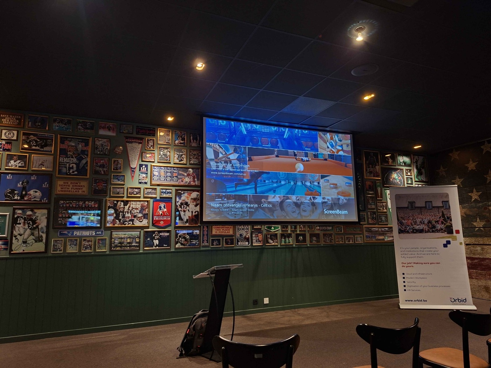
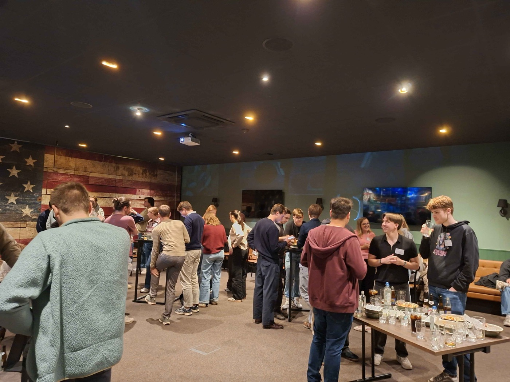
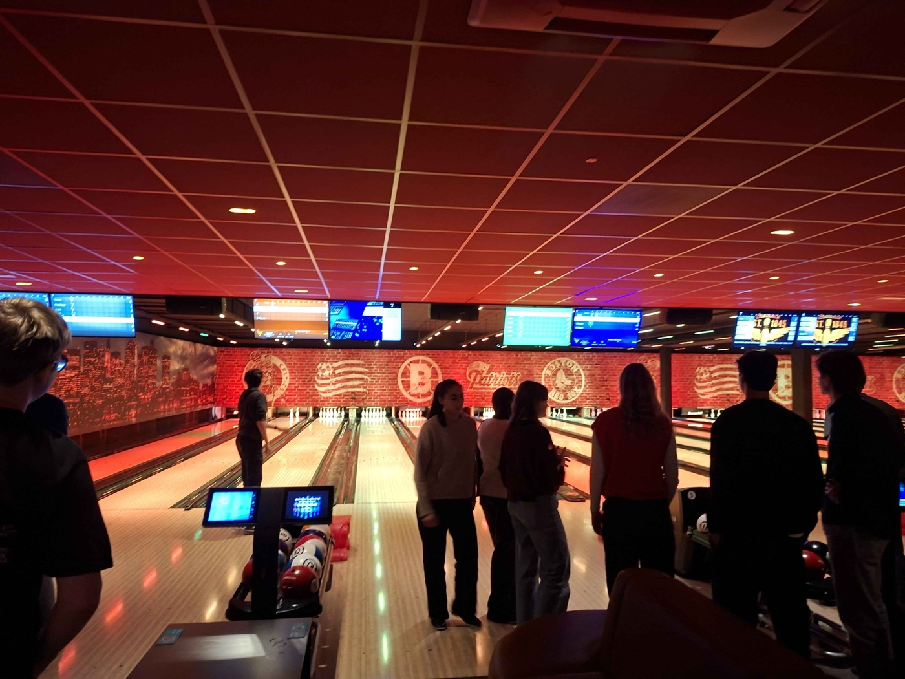

On Thursday 22 October 2026 I was invited to the Young Potentials Classes organised by Orbid in Ghent. The evening is aimed at final-year students and gives you an honest look at what working in IT consultancy is really like. I went in curious and came out with a much clearer picture of that world.
The setting
Forget a stiff conference room. The event took place in a sports bar, with walls full of framed jerseys and old match photos, a projector screen and a single lectern up front. It set the tone right away: this was going to be an informal evening, but with real content.

AI development with C# and .NET
The highlight for me was the session on AI development with C# and .NET. A lot of AI content online starts and ends with Python notebooks, so it was refreshing to see how intelligent features, chatbots and Copilot tools are built inside a familiar enterprise stack.
What stuck with me was the gap between theory and practice. At school we learn software engineering principles: layered architecture, clean interfaces, testability. This session showed how those same principles still apply when an AI component enters the picture. The model is just one part of the system. Around it you still need solid architecture, integration with existing services and everything else that turns a demo into a production-grade solution a client can actually rely on.
As someone who leans towards the backend, I found that reassuring. AI doesn't replace good engineering. It makes good engineering matter even more.
The AI part is only one piece of the puzzle. The architecture around it is what makes it ready for a real client.
What life as a consultant looks like
Beyond the technical deep dive, the evening gave a practical view of daily life as an IT consultant. As a student you mostly hear the word "consultant" without really knowing what it means in practice. Hearing it straight from the people who do the job made it a lot more concrete, and it helped me think about which direction I want to go after graduating.

Afterwork and bowling
We wrapped up with an afterwork and a friendly round of bowling. That turned out to be the perfect way to keep the conversations going. It's a lot easier to ask someone about their job while you're waiting for your turn on the lane than across a formal table.

What I took away
The evening found a good balance between learning and networking. I got a technical session that connected directly to my studies, a realistic view of what consultancy work looks like, and plenty of chances to talk to people in the field without any pressure. A big thank you to the team at Orbid for putting together such an informative, well-structured and welcoming event.